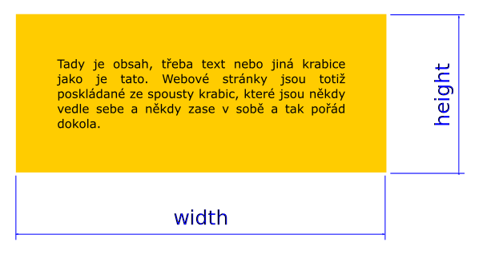
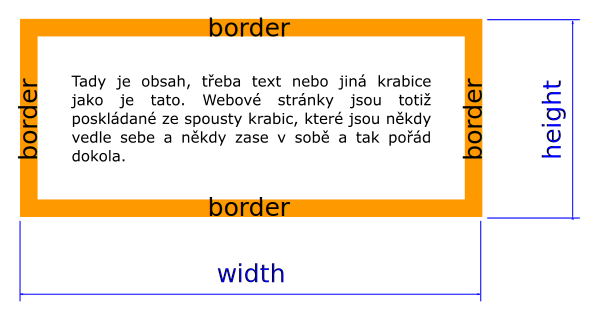
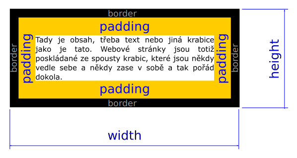
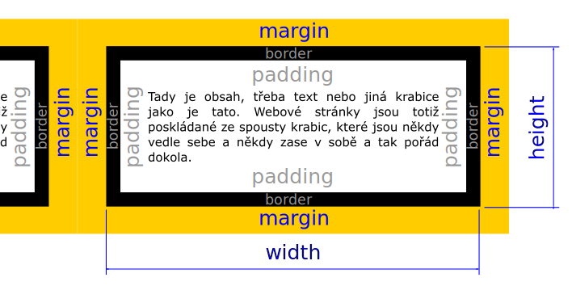

<!DOCTYPE html>
<html lang="en">
  <head>
    <meta charset="utf-8" />
    <meta name="viewport" content="width=device-width, initial-scale=1.0, maximum-scale=1.0, user-scalable=no" />

    <title>Tvořím web: HTML/CSS</title>
    <link rel="stylesheet" href="./css/reveal.css" />
    <!-- Broken for static generation -->
    <!-- <link rel="stylesheet" href="./_assets/theme/czechitas.css" id="theme" /> -->
    <link rel="stylesheet" href="./theme/czechitas.css" id="theme" />
    <link rel="stylesheet" href="./css/highlight/idea.css" />
    <link rel="stylesheet" href="./css/print/paper.css" type="text/css" media="print" />

  </head>
  <body>
    <div class="reveal">
      <div class="slides"><section  data-markdown><script type="text/template"># Ovládání prezentace
<!-- .element: class="c-text-sm" -->

<div class="c-text-xs c-text-left">

<kbd>Mezerník</kbd> <kbd>N</kbd> Další slide<br>

<kbd>P</kbd> Předchozí slide<br>

<kbd>←</kbd> <kbd>→</kbd> <kbd>↑</kbd> <kbd>↓</kbd>
Navigace mezi úrovněmi slidů<br>

<kbd>F</kbd> Na celou obrazovku<br>

<kbd>O</kbd> Přehled slidů jako zmenšeniny<br>

<kbd>S</kbd> Poznámky přednášejícího<br>

<kbd>?</kbd> Nápověda ke klávesovým zkratkám<br>

<kbd>M</kbd> Menu s textovým přehledem slajdů<br>


</div>
</script></section><section  data-markdown><script type="text/template">

<!-- .slide: data-state="c-slide-half" -->

# Tvořím web!
## HTML/CSS

<aside class="notes"><p>Ahoj, díky ... za úvod</p>
</aside></script></section><section  data-markdown><script type="text/template">

<!-- .slide: data-state="c-slide-inter" -->

# Jak funguje web?
</script></section><section  data-markdown><script type="text/template">
# Webová stránka se skládá ze souborů

<aside class="notes"><ul>
<li>Soubor je fotka, video nebo dokument ve Wordu… a webová stránka.</li>
<li>Prakticky se weby skládají často z desítek souborů, ale celý web může být i v jednom jediném.</li>
</ul>
</aside></script></section><section  data-markdown><script type="text/template">
# Ty jsou obvykle dostupné na internetu

<aside class="notes"><ul>
<li>Soubory se většinou přenáší po internetu</li>
<li>Počítač, který je poskytuje se jmenuje server.</li>
<li>Většinou nemá připojený monitor ani klávesnici.</li>
<li>Napište do vyhledávače obrázků &quot;server&quot;. Tak nějak, až na ty neony apod.</li>
</ul>
</aside></script></section><section  data-markdown><script type="text/template">
# Prohlížeč je stahuje a nakreslí z&nbsp;nich web

<aside class="notes"><ul>
<li>Prohlížeč si soubory přečte, pochopí je a pak podle nich nakreslí stránku, pokud je v pořádku.</li>
<li>Nejdříve se načte HTML, v kterém se prohlížeč dočte, jestli nepotřebuje další soubory, pokud ano, řekne si o ně stejně jako o HTML.</li>
<li>Ne každý prohlížeč je pochopí správně. Tím se dnes ale zabývat nebudeme.</li>
</ul>
</aside></script></section><section  data-markdown><script type="text/template">
# Jak ty soubory vzniknou?

<aside class="notes"><p>Někdo je musí napsat. Ano, prostě je napíšete na klávesnici.
Dokonce i některé obrázky napíšete.</p>
</aside></script></section><section  data-markdown><script type="text/template">
<!-- .slide: data-state="c-slide-inter" -->

# Repl.it
</script></section><section  data-markdown><script type="text/template">
## Editor

<aside class="notes"><ul>
<li>Soubory, ze kterých se web skládá musíme někde upravovat, editovat.</li>
<li>Pomocí Repl.it můžeme snadno upravovat textové soubory.</li>
<li>Přestože je to hlavně výukový nástroj, má některé vlastnosti a podobné principy, které jsou běžné v profesionálních editorech.</li>
<li>Pomáhá nám: upozorňuje na chyby v pravopise kódu</li>
</ul>
</aside></script></section><section  data-markdown><script type="text/template">
## Online

<aside class="notes"><ul>
<li>Repl.it je online, není si třeba nic instalovat.</li>
<li>Pouze je třeba zvolit jaký jazyk se chceme učit. V našem případě je to HTML, CSS, JS.</li>
</ul>
</aside></script></section><section  data-markdown><script type="text/template">
<!-- .slide: data-state="c-slide-task" -->

# Založíme si účet na Repl.it
</script></section><section  data-markdown><script type="text/template">
## Soubory

<aside class="notes"><ul>
<li>úplně vlevo je seznam souborů</li>
<li>kliknutím si ho otevřeš</li>
</ul>
</aside></script></section><section  data-markdown><script type="text/template">
## Kód

<aside class="notes"><ul>
<li>Pokud otevřeš textový soubor s kódem, zobrazí se ti uprostřed a můžeš ho rovnou upravovat.</li>
<li>Pokud se ti zdá špatně čitelný, po kliknutí na ozubené kolečko v levé liště se objeví možnost si kód zvětšit, přepnout pozadí na tmavé nebo světlé, případně změnit uspořádání jednotlivých podoken, podle toho co ti vyhovuje.</li>
<li>Na horní liště podokna s kódem je ikona, která spustí „auto-format“. To znamená, že hezky zarovná a odsadí kód. To oceníš, jakmile kódu začne přibývat. Nestyď se a klikej na ni často.</li>
</ul>
</aside></script></section><section  data-markdown><script type="text/template">
## Náhled stránky

<aside class="notes"><ul>
<li>Úplně vpravo je náhled stránky. Abys viděla změny, které provedeš v editoru kódu, musíš napoprvé nahoře kliknout na tlačítko <em>run</em>. Pak už stačí po provedení změn kliknout na ikonu <em>refresh</em> (zatočená šipka) v podokně s náhledem.</li>
<li>Poslední tlačítko za adresním řádkem otevře tvou stránku do nové záložky. Uvidíš stránku tak, jak ji uvidí běžní návštěvníci.</li>
</ul>
</aside></script></section><section  data-markdown><script type="text/template">
## Klávesové zkratky

### Práce s textem
* <kbd>Ctrl+→</kbd> <kbd class="nichtvergissmeinnicht">Alt+→</kbd> Posun po slovech doprava
* <kbd>Ctrl+←</kbd> <kbd class="nichtvergissmeinnicht">Alt+←</kbd> Posun po slovech doleva
* <kbd>Ctrl+Shift+→</kbd> <kbd class="nichtvergissmeinnicht">Alt+Shift+→</kbd> Výběr po slovech doprava
* <kbd>Ctrl+Shift+←</kbd> <kbd class="nichtvergissmeinnicht">Alt+Shift+←</kbd> Výběr po slovech doleva

<aside class="notes"><ul>
<li>Tyto jsou univerzální, fungují i v jiných programech.</li>
<li>Ty světle modré jsou pro Mac</li>
<li>Pokud neznáte, osvojte si je. Ohromně šetří čas.</li>
<li>Také jde klikat 2x pro výběr slova, 3x pro výběr řádku</li>
</ul>
</aside></script></section><section  data-markdown><script type="text/template">
## Klávesové zkratky

* <kbd>Home</kbd> <kbd>End</kbd> skok na začátek, konec řádku
* <kbd>Ctrl+Home</kbd> <kbd>Ctrl+End</kbd> skok na začátek, konec souboru
* <kbd>Ctrl+Shift+Home</kbd> <kbd>Ctrl+Shift+End</kbd> skok na začátek, konec souboru, přeskočený text se označí
</script></section><section  data-markdown><script type="text/template">
## Klávesové zkratky

<kbd>Ctrl+A</kbd> <kbd class="nichtvergissmeinnicht">Cmd+A</kbd> Výběr všeho

<kbd>Ctrl+C</kbd> Kopírovat

<kbd>Ctrl+V</kbd> Vložit

<kbd>Ctrl+X</kbd> Kopírovat a smazat (vyjmout) <br> _výběr nebo bez výběru pro celý řádek_ <!-- .element: class="c-text-sm" -->


<aside class="notes"><p>Mac má tyto zkratky stejné, jen místo Ctrl je Cmd</p>
</aside></script></section><section  data-markdown><script type="text/template">
## Klávesové zkratky

### Repl.it
* spustit kód <kbd>Ctrl+Enter</kbd> <br> _jako kliknutí na&nbsp;tlačítko&nbsp;run_ <!-- .element: class="c-text-sm" -->
* odsazení <kbd>Tab</kbd> přidat <kbd>Shift+Tab</kbd> ubrat <br> _lze odsazovat více řádků najednou_ <!-- .element: class="c-text-sm" -->
* zformátovat celý dokument <kbd>Shift+Alt+F</kbd>
* vyhledávání ve všech dostupných příkazech <kbd>F1</kbd> nebo <kbd>Ctrl+Shift+P</kbd>
</script></section><section  data-markdown><script type="text/template">
<!-- .slide: data-state="c-slide-task" -->

# Osaháme si Repl.it a klávesové zkratky

<aside class="notes"><ul>
<li>Všimni si, že text je v náhledu slitý do jednoho bloku.</li>
<li>Chybějící strukturu vytvoříme pomocí jazyka HTML.</li>
</ul>
</aside></script></section><section  data-markdown><script type="text/template">

<!-- .slide: data-state="c-slide-inter" -->

# HTML

<aside class="notes"><ul>
<li>První, co si prohlížeč stahuje, je HTML soubor, který obsahuje informace o stránce.</li>
<li>Je to textový soubor, takže ho můžete upravovat v jakémkoli textovém editoru jako je Poznámkový blok (Notepad) apod., my samozřejmě budeme používat Thimble</li>
<li>Oblíbené editory: Atom, Sublime Text, VS Code</li>
</ul>
</aside></script></section><section  data-markdown><script type="text/template">
## Značkovací jazyk

<aside class="notes"><ul>
<li>HT<strong>ML</strong> =&gt; mark-up language = značkovací</li>
<li>Značkovací, protože význam a strukturu dokumentu popisuje pomocí značek, anglicky tagů.</li>
</ul>
</aside></script></section><section  data-markdown><script type="text/template">
## Tag/značka
```html
<jmenotagu>
    Obsah tagu
</jmenotagu>
```
<!-- .element: class="c-text-xl stretch" contenteditable="true" -->

<aside class="notes"><ul>
<li>Tag se skládá ze špičatých závorek, názvu tagu mezi nimi.</li>
<li>Mluvíme o párovém tagu: první je otevírací a druhý je zavírací.</li>
<li>Uzavírá se lomítkem za první špičatou závorkou.</li>
<li>Mezi tagy je jeho obsah, tedy to co obaluje. To může být obyčejný text nebo další tag nebo tagy.</li>
<li>Existují i nepárové tagy (těch je pár), upozorním, až se k nim dostaneme.</li>
<li>Tagy vytvářejí v prostředí webové stránky tzv. <strong>elementy/prvky</strong>, z nichž se skládá každá stránka.</li>
</ul>
</aside></script></section><section  data-markdown><script type="text/template">
## Klávesnice <!-- .element: class="c-sr-only" -->

<!-- .slide: data-background="img/keyboard-cs-html.svg" -->

<aside class="notes"><ul>
<li>Protože je pro psaní HTML potřeba některé méně časté znaky, máte na stole pomůcku pro nalezení znaků.</li>
<li>Kouzelná je klávesa AltGr s kterou napíšete většinu znaků.</li>
<li>Někdo může mít trochu jiné rozložení.</li>
<li>Kdo má Mac to má jednodušší - platí to co je vytištěné na klávesnici.</li>
</ul>
</aside></script></section><section  data-markdown><script type="text/template">
## Tagy

```html
<h1>Hlavní nadpis</h1>

<p>odstavec</p>

<strong>důležitý text</strong>

```
<!-- .element: class="c-text-md stretch" contenteditable="true" -->

<aside class="notes"><ul>
<li>jak používají web nevidomí?</li>
<li>Jména tagů jsou většinou zkratky anglických slov. Např.:<ul>
<li><code>h</code> = heading</li>
<li><code>p</code> = paragraph</li>
</ul>
</li>
</ul>
</aside></script></section><section  data-markdown><script type="text/template">
<!-- .slide: data-state="c-slide-task" -->

# Zkusíme si první tagy

<aside class="notes"><ul>
<li>Všimněte si zvýrazňování bloků v živém náhledu ==&gt; správné zanořování a uzavírání!</li>
</ul>
</aside></script></section><section  data-markdown><script type="text/template">
## Základní struktura HTML

```html
<!DOCTYPE HTML>
<html>
    <head>
        <!-- vlastnosti stránky -->
    </head>
    <body>
        <!-- samotný obsah stránky -->
    </body>
</html>
```
<!-- .element: class="c-text-md stretch" contenteditable="true" -->

<aside class="notes"><ul>
<li>HTML dokument má mít tuto strukturu.</li>
<li>Úplně první je tzv. doctype. Říká prohlížeči jaký typ HTML má čekat. Není potřeba se jím nyní zabývat, jen ho tam vždy mějte.</li>
<li>Všechno ostatní je uvnitř elementu <code>html</code> =&gt; je obaleno obaleno tagem <code>&lt;html&gt;</code>.</li>
<li>V hlavičce (<code>&lt;head&gt;</code>) jsou definovány vlastnosti pro celou stránku. Většinou „nejsou vidět“. O hlavičce později.</li>
<li>V těle stránky (<code>&lt;body&gt;</code>) je vlastní text stránky, obrázky atd. Většinou „je vidět“. Zde budeme nyní pracovat.</li>
<li>Všimněte si odsazení. A dbejte na něj ve svém kódu.</li>
<li>Všimněte si komentářů.</li>
<li><strong>Přestávka?</strong></li>
</ul>
</aside></script></section><section  data-markdown><script type="text/template">
<!-- .slide: data-state="c-slide-inter" -->

# Nadpisy, odstavce a odkazy
</script></section><section  data-markdown><script type="text/template">
## Nadpisy

```html
<h1>Web Kryštůvka Robina</h1>

<h2>Kontakt</h2>

<h3>Telefonní spojení</h3>
```

<aside class="notes"><ul>
<li>dodržujte pořadí nadpisů: nenechte se svést tím, jak vypadají (po <code>h1</code> vždy nejprve <code>h2</code>, pak teprve <code>h3</code>)</li>
<li>6 úrovní nadpisů (<code>&lt;h1&gt;</code>…<code>&lt;h6&gt;</code>)</li>
<li>obvykle bývá na jednotlivé stránce jen 1 nadpis první úrovně</li>
</ul>
</aside></script></section><section  data-markdown><script type="text/template">
## Odstavec

```html
<p>
	A Kryštůfek Robin a Králíček
	a všichni Králíčkovi příbuzní
	a známí se svalili… A navrch
	na tu hromadu se svalil
	vysvobozený Pú!
</p>
```
<!-- .element: class="c-text-md stretch" contenteditable="true" -->

<aside class="notes"><ul>
<li>Jednou z nejčastěji používaných značek je vyznačování odstavce.</li>
<li>Z posloupnost mezer a zalomení řádku se stane 1 mezera =&gt; text se slije, pokud ho nestrukturujeme pomocí tagů.</li>
<li>Přesto si dejte na formátování kódu (odsazování, odřádkování) záležet, jinak se v tom nejde vyznat:<ul>
<li>Jeden element na řádek.</li>
<li>Zanořujeme-li, odsadíme začátek řádku tabulátorem.</li>
</ul>
</li>
</ul>
</aside></script></section><section  data-markdown><script type="text/template">
## Odkazy

```html
<a>
	nejlepší přítel
</a>
```
<!-- .element: class="c-text-md fragment current-visible fade-out" contenteditable="true" -->

```html
<a href="https://google.com">
	nejlepší přítel
</a>
```
<!-- .element: class="c-text-nd fragment current-visible" contenteditable="true" -->

<aside class="notes"><ul>
<li>naučíme se jak udělat odkaz</li>
<li>atribut je <code>href</code>, jeho hodnotou je odkaz</li>
<li>hodnota do &quot;uvozovek&quot;</li>
<li>Pomocí atributy dodáváme prohlížeči nějaká extra data, která nevyplývají ze samotného tagu. (Např. <code>h1</code> všeříkající, <code>a</code> je málo, musíme říct <strong>kam</strong> odkazovat.)</li>
<li>atributy se píšou do otevíracího tagu nebo prostě do tagu</li>
</ul>
</aside></script></section><section  data-markdown><script type="text/template">
<!-- .slide: data-state="c-slide-task" -->

# Přidáme sekci _Kontakt_

<aside class="notes"><ul>
<li>upozornit na bonus, pokud mají hotovo</li>
</ul>
</aside></script></section><section  data-markdown><script type="text/template">
## Další funkce Repl.it

* Zvýrazní párové značky k té, kde je právě kurzor.
* Napovídá uzavírací značku.
</script></section><section  data-markdown><script type="text/template">
<!-- .slide: data-state="c-slide-inter" -->

# Obrázky
</script></section><section  data-markdown><script type="text/template">
# Tag img

```html

```
<!-- .element: class="c-text-lg fragment fade-out" contenteditable="true" -->

```html

```
<!-- .element: class="c-text-lg fragment fade-out current-visible" contenteditable="true" -->

```html

```
<!-- .element: class="c-text-md fragment current-visible" contenteditable="true" -->

<aside class="notes"><ul>
<li>nepárový tag =&gt; nic neobaluje, pouze označuje místo, kam se vloží obrázek (a doplňuje další potřebné údaje k bezproblémovému načtení obrázku)</li>
<li><code>src</code>: cesta k obrázku (v rámci adresářové struktury daného webu nebo libovolná adresa na internetu)</li>
<li><code>alt</code>: nevidomí, vyhledávače, uživatelé s pomalým připojením</li>
<li>formáty obrázků: GIF, JPG, PNG, SVG</li>
</ul>
</aside></script></section><section  data-markdown><script type="text/template">
# Pozor na licence

<aside class="notes"><ul>
<li>Zkuste si sami vyhledat obrázky na Google<ul>
<li>práva k použití: jen nekomerční</li>
<li>velikost: střední</li>
<li>zobrazit rozměry</li>
<li>pravým tlačítkem: kopírovat adresu obrázku</li>
<li>rozměry: nejsou nutné, ale je to lepší, je možné napsat jen jeden</li>
</ul>
</li>
</ul>
</aside></script></section><section  data-markdown><script type="text/template">
<!-- .slide: data-state="c-slide-task" -->

# Přidáme mapu
</script></section><section  data-markdown><script type="text/template">
<!-- .slide: data-state="c-slide-task" -->

# Přidáme obrázkovou galerii

<aside class="notes"><ul>
<li>Opáčko tagu <code>&lt;img&gt;</code> (a práce s editorem)</li>
<li>několikanásobný kurzor <code>Ctrl+click</code></li>
</ul>
</aside></script></section><section  data-markdown><script type="text/template">
<!-- .slide: data-state="c-slide-inter" -->

# HTML hlavička
</script></section><section  data-markdown><script type="text/template">
# Hlavička

```html
<!DOCTYPE HTML>
<html>
	<head>
		<!-- vlastnosti stránky -->
	</head>
	<body>
		<!-- samotný obsah stránky -->
	</body>
</html>
```
<!-- .element: class="c-text-md stretch" contenteditable="true" -->

<aside class="notes"><ul>
<li>připomeneme si strukturu HTML dokumentu:<ul>
<li><code>&lt;html&gt;</code> obaluje vše</li>
<li>uvnitř dva hlavní bloky: <code>&lt;head&gt;</code> a <code>&lt;body&gt;</code></li>
<li>doteď jsme pracovali v <code>&lt;body&gt;</code></li>
</ul>
</li>
<li><code>&lt;head&gt;</code> se „nezobrazuje“, zato obsahuje údaje, které ovlivňují vzhled a chování stránky</li>
</ul>
</aside></script></section><section  data-markdown><script type="text/template">
# Titulek

```html
<title>
	Název stránky
</title>
```
<!-- .element: class="c-text-xl stretch" contenteditable="true" -->

<aside class="notes"><ul>
<li>Mezi tagy <code>&lt;head&gt;&lt;/head&gt;</code></li>
<li>Zobrazuje se na záložce v prohlížeči ‒ jediný z <code>&lt;head&gt;</code> je přímo vidět</li>
<li>Abyste ho na našem webíku viděly, musíte si ho otevřít do nového okna: klikem na ikonku nad náhledem stránky.</li>
<li><strong>Přestávka, oběd??</strong></li>
</ul>
</aside></script></section><section  data-markdown><script type="text/template">
<!-- .slide: data-state="c-slide-task" -->

# Doplníme titulek
</script></section><section  data-markdown><script type="text/template">

<!-- .slide: data-state="c-slide-inter" -->

# CSS

<aside class="notes"><ul>
<li>Jazyk popisující vzhled elementů webové stránky.</li>
</ul>
</aside></script></section><section  data-markdown><script type="text/template">
## Z čeho se skládá stránka

* HTML (obsah a struktura) <!-- .element: class="fragment" -->
* CSS (vzhled) <!-- .element: class="fragment" -->
* obrázky a třeba i videa nebo zvuky (netextový obsah) <!-- .element: class="fragment" -->
* JavaScript (aplikace, animace a další) <!-- .element: class="fragment" -->

<aside class="notes"><ul>
<li>V HTML je obsah stránky a také je v něm popsáno, jaká je struktura toho obsahu.</li>
<li>V HTML se také definuje, jaké má stránka obsahovat obrázky a případné další součásti. =&gt; obsah</li>
<li>CSS říká, jak mají jednotlivé prvky stránky vypadat =&gt; forma</li>
<li>HTML a CSS jsou provázané, některé úpravy vzhledu v CSS závisí na konkrétní struktuře v HTML.</li>
<li>Hranice mezi formou a obsahem se občas překračuje, ale tím se nyní nemusíme znepokojovat.</li>
<li>Javascript je programovací jazyk, který umožňuje manipulovat s prvky stránky.</li>
</ul>
</aside></script></section><section  data-markdown><script type="text/template">
## Připojení CSS

```html
<link
    rel="stylesheet"
    href="nazevsouboru.css"
>
```
<!-- .element: class="c-text-lg stretch" contenteditable="true" -->

<aside class="notes"><ul>
<li>Je více způsobů, jak aplikovat CSS, my použijeme nejběžnější a to samostatný CSS soubor, připojený pomocí tagu link v hlavičce.</li>
<li><code>link</code> je další nepárový tag (nemá co obalovat, pouze říká, že a odkud se má stylopis načíst)</li>
</ul>
</aside></script></section><section  data-markdown><script type="text/template">
## Anatomie CSS

<pre class="c-text-md fragment" contenteditable data-fragment-index="10"><code class="lang-css" data-noescape><span class="fragment" data-fragment-index="20">kdo</span><span class="fragment" data-fragment-index="30"> { </span>
    <span class="fragment" data-fragment-index="40">co</span><span class="fragment" data-fragment-index="50">:</span><span class="fragment" data-fragment-index="60"> jak</span><span class="fragment" data-fragment-index="70">;</span>
<span class="fragment" data-fragment-index="80">}</span>
</code>
<code class="lang-css" data-noescape><span class="fragment" data-fragment-index="120">selektor</span><span class="fragment" data-fragment-index="130"> { </span>
    <span class="fragment" data-fragment-index="140">vlastnost</span><span class="fragment" data-fragment-index="150">:</span><span class="fragment" data-fragment-index="160"> hodnota</span><span class="fragment" data-fragment-index="170">;</span><span class="fragment" data-fragment-index="1100">
    property: value;</span>
<span class="fragment" data-fragment-index="180">}</span>
</code></pre>

<aside class="notes"><ul>
<li>Přibydou nám další méně obvyklé znaky: <code>{ } ;</code></li>
<li>selektor říká, co chceme barvit</li>
<li>deklarace jak</li>
<li>1 tento řádek = pravidlo</li>
<li>chyby:<ul>
<li>neukončíme-li středníkem, pravidlo se ignoruje</li>
<li>neuzavřeme-li závorku, všechna následující pravidla se ignorují</li>
</ul>
</li>
<li>editor chyby signalizuje změnou zvýrazňovacích barev</li>
<li>Repl.it ti zvýrazní uzavírací závorku předpisu, když zaparkuješ kurzor těsně za otevírací závorku.</li>
</ul>
</aside></script></section><section  data-markdown><script type="text/template">
## Barvy

<pre class="c-text-md fragment" contenteditable data-fragment-index="10"><code class="lang-css" data-noescape><span class="fragment" data-fragment-index="20">p</span><span class="fragment" data-fragment-index="30"> { </span>
    <span class="fragment" data-fragment-index="40">color</span><span class="fragment" data-fragment-index="50">:</span><span class="fragment" data-fragment-index="60"> white</span><span class="fragment" data-fragment-index="70">;</span><span class="fragment" data-fragment-index="100">
    background-color: black;</span>
<span class="fragment" data-fragment-index="80">}</span>
</code></pre>

<aside class="notes"><ul>
<li>Barvy lze zapisovat více způsoby, my budeme používat tzv. pojmenovaných barev. Jejich počet je omezený.</li>
<li>Libovolnou barvu lze získat číselným zápisem, např. hexadecimálním.</li>
<li>Editor nám pomáhá, když upravujeme barvy, nabídne nám seznam barev s ukázkou.</li>
</ul>
</aside></script></section><section  data-markdown><script type="text/template">
<!-- .slide: data-state="c-slide-task" -->

# Připojíme styly
</script></section><section  data-markdown><script type="text/template">
<!-- .slide: data-state="c-slide-inter" -->

# Vlastnosti textu
</script></section><section  data-markdown><script type="text/template">
# style, weight, align, family <!-- .element: class="c-sr-only" -->

```css
p {
	font-style: italic;  /* nebo normal */

	font-weight: bold; /* nebo normal */

	font-family: sans-serif; /* nebo serif */

	text-align: center; /* nebo left nebo right */
}
```
<!-- .element: class="c-text-sm stretch" contenteditable="true" -->

<aside class="notes"><ul>
<li>všimněte si komentáře, ten se ignoruje, hodí se pro poznámky nebo když chcete zkusit, jak se to chová bez nějakého kusu kódu</li>
<li>zkuste všechny použít</li>
<li><strong>dědičnost</strong>: některé vlastnosti se dědí a tyto jsou mezi nimi</li>
<li>kvůli (nejen) dědičnosti existují hodnoty <code>normal</code>, slouží k „vynulování“ vlastnosti.</li>
<li>Lze nastavit i konkrétní fonty, ale musí být buď na uživatelově počítači, nebo se musí ke stránce připojit (podobně jako obrázky, nebo soubory CSS). Když ho nenajde vezme výchozí písmo daného operačního systému. Proto je vhodné uvést univerzální hodnoty <code>serif</code>/<code>sans-serif</code>, aby prohlížeč alespoň věděl, jaký typ zástupného fontu použít. Vždy ale musíš respektovat licenční podmínky. V praxi se využívají služby jako Typekit, nebo Google Fonts, které mají licenční podmínky ošetřeny.</li>
</ul>
</aside></script></section><section  data-markdown><script type="text/template">
<!-- .slide: data-state="c-slide-task" -->

# Upravíme písmo
</script></section><section  data-markdown><script type="text/template">
<!-- .slide: data-state="c-slide-inter" -->

# Velikost textu
</script></section><section  data-markdown><script type="text/template">
# Ukázka jednotek <!-- .element: class="c-sr-only" -->

```css
font-size: 1.5rem;
font-size: 20px;
```

<aside class="notes"><ul>
<li>rem ~ výchozí velikost písma dokumentu (velikost písma prvku <code>&lt;html&gt;</code>)</li>
<li>px = pixely (obrazovka)</li>
<li>tyto jednotky lze nastavit všem vlastnostem, kde to dává smysl (šířka, odsazení, tloušťka rámečku atp.), budeme se o nich bavit později</li>
</ul>
</aside></script></section><section  data-markdown><script type="text/template">
<!-- .slide: data-state="c-slide-task" -->

# Měníme velikosti písma
</script></section><section  data-markdown><script type="text/template">
<!-- .slide: data-state="c-slide-inter" -->

# Pozadí
</script></section><section  data-markdown><script type="text/template">
## Barva pozadí

```css
p {
    background-color: green;
    background-color: hsl(120, 100%, 50%);
    background-color: rgb(0, 255, 0);
    background-color: #00FF00;
}
```
<!-- .element: class="c-text-sm" contenteditable="true" -->

<aside class="notes"><ul>
<li>barvy slovně (jak to nabízí Repl.it)</li>
<li>v praxi spíše číselně, hexadecimálně</li>
<li>HSL: hue, saturation, luminescence ~ odstín, sytost, jas</li>
<li>#rrggbb =&gt; vždy dvojciferné číslo pro barevnou složku červená|zelená|modrá</li>
<li>hodnoty 0‒255, ale šestnáctkově 0‒ff</li>
<li>Repl.it ti nabídne pohodlný výběr barvy, když zaparkuješ kurzor nad řádkem, kde barvu nastavuješ. (asi ukázat)</li>
</ul>
</aside></script></section><section  data-markdown><script type="text/template">
## Extra prvky

```html
<div>
    <h2>Nadpis</h2>
    <p>Úryvek novinky…</p>
    <a href="detail.html">více</a>
</div>
```

<aside class="notes"><ul>
<li>Někdy je třeba k tomu, abychom dosáhli potřebného vizuálního efektu přidat extra prvky.</li>
<li>Pak se hodí tag <code>&lt;div&gt;</code> =&gt; abychom mohli kouzlit s CSS, musíme nejprve upravit HTML.</li>
<li><code>div</code> jako division =&gt; oddělení</li>
<li>Tagem <code>&lt;div&gt;</code> obalíme přislušné části stránky, se kterými chceme pracovat jako s celky.</li>
<li><strong>Přestávka?</strong></li>
</ul>
</aside></script></section><section  data-markdown><script type="text/template">
<!-- .slide: data-state="c-slide-task" -->

# Nastavíme barvu pozadí
</script></section><section  data-markdown><script type="text/template">
<!-- .slide: data-state="c-slide-inter" -->

# Třídy
</script></section><section  data-markdown><script type="text/template">
# Problém: jak odlišit elementy <!-- .element: class="c-sr-only" -->

```html
<p>A víte, že…?</p>

<p>Ještě jeden odstavec</p>

```
<!-- .element: class="c-text-md" contenteditable="true" -->

```css
p { color: blue; }
```
<!-- .element: class="c-text-md fragment" contenteditable="true" -->

<aside class="notes"><ul>
<li>Co kdybych chtěl vypsat odstavce modře?</li>
<li>Ale co kdybych chtěl udělat jen první odstavec modrý?</li>
</ul>
</aside></script></section><section  data-markdown><script type="text/template">
# Řešení: jak odlišit elementy <!-- .element: class="c-sr-only" -->

```html
<p class="tip">A víte, že…?</p>

<p>Ještě jeden odstavec</p>

```
<!-- .element: class="c-text-md" contenteditable="true" -->

```css
.tip { color: blue; }
```
<!-- .element: class="c-text-md fragment" contenteditable="true" -->

<aside class="notes"><ul>
<li>řešením je přidat třídu, která umožňuje se zaměřit v CSS přesněji</li>
<li>třída se v HTML přidává jako atribut <code>class</code></li>
<li>v CSS se zapíše s tečkou na začátku</li>
<li>třídu můžeme přiřadit libovolnému počtu značek</li>
</ul>
</aside></script></section><section  data-markdown><script type="text/template">
# Třída platí pro více elementů <!-- .element: class="c-sr-only" -->

```html
<h1 class="tip">Tip</h1>

<p class="tip">A víte, že…?</p>

<p>Ještě jeden odstavec</p>

```
<!-- .element: class="c-text-md" contenteditable="true" -->

```css
.tip { color: blue; }
```
<!-- .element: class="c-text-md" contenteditable="true" -->

<aside class="notes"><ul>
<li>třída se tedy použije pokud má nějaký prvek speciální vlastnosti</li>
<li>nebo se skupina vlastností opakuje a chceme si tak ušetřit zápis</li>
</ul>
</aside></script></section><section  data-markdown><script type="text/template">
# Vícenásobné třídy

```css
.tip { color: red; }
.cool { background-color: blue; }
```
<!-- .element: class="c-text-md " contenteditable="true" -->

```html
<p class="tip">…</p>
<p class="cool">…</p>
<p class="cool tip">…</p>
```
<!-- .element: class="c-text-md " contenteditable="true" -->

<aside class="notes"><ul>
<li>jeden atribut <code>class</code> může mít přiřazeno více hodnot ‒ tříd</li>
<li>oddělujeme je mezerou</li>
<li><strong>Kratičká přestávka před box modelem?</strong></li>
</ul>
</aside></script></section><section  data-markdown><script type="text/template">
<!-- .slide: data-state="c-slide-task" -->

# Přidáme třídy
</script></section><section  data-markdown><script type="text/template">
<!-- .slide: data-state="c-slide-inter" -->

# Box-model
</script></section><section  data-markdown><script type="text/template">
### Výška a šířka

```css
.tip {
	width: 300px;
	height: 100px;
	max-width: 100%;
}
```
<!-- .element: class="c-text-sm " contenteditable="true" -->



<aside class="notes"><ul>
<li>přestaneme pomalu mluvit o značkách a začneme mluvit o prvcích/elementech, které prohlížeč na stránce (na základě značek) vytvoří</li>
<li>z jednotlivých prvků skládáme komponenty a z nich pak stránky</li>
<li>lze také nastavi šířku/výšku minimální a maximální =&gt; <code>min-width</code>, <code>max-height</code></li>
<li>pozor na procenta u výšky: stránka je z principu nekonečná</li>
</ul>
</aside></script></section><section  data-markdown><script type="text/template">
<!-- .slide: data-state="c-slide-task" -->

# Nastavíme obrázkům v galerii šířku
</script></section><section  data-markdown><script type="text/template">
### Ohraničení

```css
img {
	border-width: 2px;
	border-style: solid;
	border-color: black;
}
```

<!-- .element: class="c-text-xs fragment" contenteditable="true" -->

```css
img {
	border: 2px solid black;
}

```
<!-- .element: class="c-text-xs fragment" contenteditable="true" -->




<aside class="notes"><ul>
<li>ohraničení: vytyčuje hranici mezi prvkem a okolím (okolními prvky)</li>
<li>rámeček kolem prvku: různé hodnoty <code>border-style</code> (dotted, dashed, inset)</li>
<li>zkrácený zápis: totéž co nad; tento nastaví stejný rámeček po všech stranách. Lze samozřejmě nastavovat ohrančení pro každou stranu zvlášť.</li>
<li>lze stylovat samostatně každou ze 4 stran: top, right, bottom, left (border-left)</li>
</ul>
</aside></script></section><section  data-markdown><script type="text/template">
<!-- .slide: data-state="c-slide-task" -->

# Orámujeme obrázky
</script></section><section  data-markdown><script type="text/template">
### Odsazení obsahu od okraje

```css
.tip {
	padding: 1.5rem;
}
```
<!-- .element: class="c-text-md " contenteditable="true" -->



<aside class="notes"><ul>
<li>„hraniční pásmo“ ‒ prostor mezi ohraničením a obsahem prvku</li>
<li>1 hodnota nastaví shodné odsazení na všech 4 stranách prvku.</li>
</ul>
</aside></script></section><section  data-markdown><script type="text/template">
<!-- .slide: data-state="c-slide-task" -->

# Vnitřní odsazení obrázků
</script></section><section  data-markdown><script type="text/template">
### Odsazení od vnějších prvků

```css
.tip {
	margin: 1rem;
}
```
<!-- .element: class="c-text-md " contenteditable="true" -->



<aside class="notes"><ul>
<li>za hranicí prvku, v rodičovském prvku (<code>div</code>, <code>body</code>)</li>
<li>všimněte si, že margin se už do šířky prvku nezapočítává, to je důležité si uvědomit, když počítám šířku kterou mi prvky zaberou (pokud mají margin po obou stranách, zabere mi každý prvek 2 × margin + šířka)</li>
<li>poznámka pod čarou: margin může nabývat i záporných hodnot</li>
</ul>
</aside></script></section><section  data-markdown><script type="text/template">
<!-- .slide: data-state="c-slide-task" -->

# Větší mezery mezi obrázky
</script></section><section  data-markdown><script type="text/template">
### Box-model ‒ shrnutí


<aside class="notes"><ul>
<li>všechny prvky na stránce bez ohledu na vizuální tvar jsou krabice/boxy</li>
<li>vlastnost <code>width</code> určuje, jak má být prvek široký <em>včetně</em> ohraničení (<code>border</code>) a výplně (<code>padding</code>)</li>
<li><code>margin</code> se do šířky nezapočítává, ale ovlivňuje, kolik místa prvek ve výsledku zabere</li>
<li><strong>Pozor při výpočtech</strong>: nezpomeňte násobit 2: <br>
  <code>margin: 5px;</code> ubere na šířku (resp. výšku) úhrnem <code>10 px</code> =&gt; vlevo a vpravo (resp. nahoře a dole). Platí i pro <code>padding</code> a <code>border</code>.</li>
<li>výše uvedené platí pouze pokud mají všechny prvky nastaven <code>box-sizing: border-box;</code>, viz začátek CSS souboru na Repl.it</li>
</ul>
</aside></script></section><section  data-markdown><script type="text/template">
<!-- .slide: data-state="c-slide-task" -->

# Odsadíme obsah od okrajů
</script></section><section  data-markdown><script type="text/template">
<!-- .slide: data-state="c-slide-task" -->

# Roztáhneme pozadí až do okraje
</script></section><section  data-markdown><script type="text/template">
<!-- .slide: data-state="c-slide-inter" -->

# Pokročilé selektory
</script></section><section  data-markdown><script type="text/template">
# Vícenásobný selektor

```css
.tip,
h2 { 
    color: green; 
}
```
<!-- .element: class="c-text-lg" contenteditable="true" -->

<aside class="notes"><ul>
<li>obarví prvky s třídou .tip a nadpisy 2. úrovně na zeleno</li>
<li>každý selektor na nový řádek, aneb za čárkou odřádkovat</li>
</ul>
</aside></script></section><section  data-markdown><script type="text/template">
# Kontextový selektor

```css
.tip h2 { 
    color: blue; 
}
```
<!-- .element: class="c-text-lg" contenteditable="true" -->

<aside class="notes"><ul>
<li>obarví nadpisy 2. úrovně na modro, pokud jsou v prvku s třídou <code>.tip</code></li>
<li>odpovídá zanořování v HTML</li>
<li>tady má mezera význam (jinde na nich tolik nezáleží)</li>
</ul>
</aside></script></section><section  data-markdown><script type="text/template">
# Na pořadí záleží

<pre class="c-text-md fragment" contenteditable data-fragment-index="10"><code class="stretch lang-css" data-noescape><span class="fragment">p {
    color: red;
    background-color: pink;
}</span>

<span class="fragment">p { color: green; }</span></code></pre>

<aside class="notes"><ul>
<li>platí poslední nastavená hodnota vlastnosti</li>
<li>často se stane, že zadáte znovu tutéž vlastnost. Když dbáte na úpravu 1 pravidlo na řádek, snáz to odhalíte. (Jsou i automatizované nástroje, které to hlídají za nás.)</li>
</ul>
</aside></script></section><section  data-markdown><script type="text/template">
<!-- .slide: data-state="c-slide-task" -->

# Zjednodušujeme kód
</script></section><section  data-markdown><script type="text/template">
<!-- .slide: data-state="c-slide-inter" -->

## Pseudotřídy
</script></section><section  data-markdown><script type="text/template">
# Ukázka <!-- .element: class="c-sr-only" -->

```css
a { color: navy; }
```
<!-- .element: class="c-text-sm" contenteditable="true" -->

```css
a:link { color: blue; } /* nenavštívený */

a:visited { color: purple; } /* navštívený */

a:hover { color: red; } /* najetí myší */

a:focus { color: green; } /* aktivovaný */

a:active { color: yellow; } /* při kliknutí */
```
<!-- .element: class="c-text-sm fragment" contenteditable="true" -->

<aside class="notes"><ul>
<li>Zatímco třídy si vytváří autor kódu, pseudotřídy jsou dané.</li>
<li>Narozdíl od tříd se zapisují jen do CSS, na HTML není třeba sahat.</li>
</ul>
</aside></script></section><section  data-markdown><script type="text/template">
<!-- .slide: data-state="c-slide-task" -->

# Měníme barvu odkazů po najetí myši
</script></section><section  data-markdown><script type="text/template">
<!-- FILE: 14-css-shorthands.md -->
<!-- .slide: data-state="c-slide-inter" -->

# Navigace: HTML
</script></section><section  data-markdown><script type="text/template">
## Odrážkový seznam

```html
<ul>
    <li>odrážkový</li>
    <li>seznam</li>
</ul>
```

<aside class="notes"><ul>
<li><code>ul</code> = unordered list</li>
<li><code>li</code> = list item</li>
<li>Pamatujeme na správné zanořování a odsazování vnořených prvků.</li>
<li><code>li</code> vždy musí být přímo zanořené v <code>ul</code> (nebo <code>ol</code>)</li>
<li>Uvnitř <code>li</code> mohou být další prvky (nadpis, odstavec, dokonce další odrážkový seznam). My si vystačíme s odkazy.</li>
</ul>
</aside></script></section><section  data-markdown><script type="text/template">
<!-- .slide: data-state="c-slide-task" -->

# Přidáme navigaci (menu)
</script></section><section  data-markdown><script type="text/template">

<!-- .slide: data-state="c-slide-inter" -->

#  Navigace: CSS
</script></section><section  data-markdown><script type="text/template">
## Blokové elementy

* zaberou celou dostupnou šířku => řadí se pod sebe

<aside class="notes"><ul>
<li>na vaší stránce jsou to nadpisy, odstavce, divy</li>
</ul>
</aside></script></section><section  data-markdown><script type="text/template">
## Řádkové elementy

* zaberou jen tolik místa, kolik potřebují
* nejsou samostatně na řádku => řadí se za sebou jako slova ve větě
* nejde jim nastavit některé vlastnosti z box modelu (šířka, výška, horní/dolní okraj)

<aside class="notes"><ul>
<li>na vaší stránce jsou to například odkazy, nebo důležitý text  (<code>strong</code>)</li>
<li>ony jim ty vlastnosti nastavit jdou, ale neprojeví se očekávaným způsobem</li>
<li>lze ale například úspěšně nastavit pravý/levý margin</li>
</ul>
</aside></script></section><section  data-markdown><script type="text/template">
## Řádkově-blokové elementy

* hybrid: řádkový s některými vlastnostmi blokového
* řadí se za sebou, ale lze mu nastavit šířku, výšku a okraje

<aside class="notes"><ul>
<li>na vaší stránce se tak chovají obrázky</li>
</ul>
</aside></script></section><section  data-markdown><script type="text/template">
## Typ elementu v&nbsp;CSS

```css
a { display: block; }

div { display: inline; }

li { display: inline-block; }
```
<!-- .element: class="c-text-md stretch" contenteditable="true" -->

<aside class="notes"><ul>
<li>každý element má výchozí typ</li>
<li>pomocí CSS lze ale změnit chování prvku na jiný typ</li>
</ul>
</aside></script></section><section  data-markdown><script type="text/template">
<!-- .slide: data-state="c-slide-task" -->

# Odkazy v navigaci na jeden řádek
</script></section><section  data-markdown><script type="text/template">
<!-- .slide: data-state="c-slide-inter" -->

# Vícestránkový web
</script></section><section  data-markdown><script type="text/template">
<!-- .slide: data-state="c-slide-task" -->

# Přidáme sekci _O&nbsp;mně_
</script></section><section  data-markdown><script type="text/template">
<!-- .slide: data-state="c-slide-task" -->

# Rozdělíme web na jednotlivé stránky
</script></section><section  data-markdown><script type="text/template">
# Publikace

* Aneb zveřejnění na webu: váš projekt má adresu, kterou můžete sdílet.

<aside class="notes"><ul>
<li>Repl.it umožňuje i jednoduchou publikaci veřejně na internet.</li>
<li>Otevřete si náhled webu do nového okna a v adresním řádku vidíte adresu svého webu.</li>
</ul>
</aside></script></section><section  data-markdown><script type="text/template">
<!-- FILE: intro-co-cekat.md -->
<!-- .slide: data-state="c-slide-inter" -->

# Co dál?
</script></section><section  data-markdown><script type="text/template">
# DevTools

**Nástroje pro vývojáře** (Developer tools) má každý moderní prohlížeč

* zobrazí kód stránky, CSS a další užitečné informace
<br><small>buď <kbd>F12</kbd>, popř. <kbd>Ctrl+Shift+I</kbd> (na Macu <kbd>Cmd+Shift+I</kbd>) nebo pravým myšítkem na prvek, který vás zajímá a vybrat _Prozkoumat/Inspect element_</small>
* umožňuje dělat změny v aktuálně načtené stránce, ty ale vydrží jen dokud na ní zůstáváš

<aside class="notes"><ul>
<li>Určitě zkuste: ideální na naší hotové stránce (je jednoduchá), ale jde na libovolné, kterou zrovna máte v prohlížeči.</li>
<li>Zkuste si v Developer tools něco změnit v CSS, prozkoumejte strukturu HTML.</li>
</ul>
</aside></script></section><section  data-markdown><script type="text/template">
# Kurzy Czechitas

* Jak na web (několikatýdenní)
* Intenzivní kurz Czechitas

<aside class="notes"><p>Přehled toho, co v nejbližší době bude</p>
</aside></script></section><section  data-markdown><script type="text/template">
# Kde se poradit?

* Ptej se na Facebooku ve skupině:<br>[Czechitas - Úvod do HTML a CSS](https://www.facebook.com/groups/700368416798259/)
* V češtině je také [diskuse.jakpsatweb.cz](https://diskuse.jakpsatweb.cz/)
* Hledej na Google
<br><small>(opatrně s výsledky, nedoporučujeme např. w3schools.com)</small>
</script></section><section  data-markdown><script type="text/template">
# Zdroje v češtině

* Tradiční zdroj [jakpsatweb.cz](https://www.jakpsatweb.cz/), **sice&nbsp;zastarává**, ale část o HTML je stále platná
* Na [jecas.cz](http://jecas.cz/) jsou aktuální články a také reference (přehled) HTML i CSS
* Pro pokročilejší [vzhurudolu.cz](https://www.vzhurudolu.cz)
</script></section><section  data-markdown><script type="text/template">
# Zdroje v angličtině
 
* [codecademy.com](https://www.codecademy.com/): základní kurzy zdarma
* Reference CSS&nbsp;[cssreference.io](http://cssreference.io/) a HTML&nbsp;[htmlreference.io](http://htmlreference.io/)
<br><small>hezky popisují nejpoužívanější prvky a vlastnosti</small>
* Videokurzy na [udemy.com](https://www.udemy.com) nebo [Lynda.com](https://www.lynda.com/)
<br><small>nutno vybírat, placené, ale občas mají akce se slevami nebo omezenou dobu zdarma</small>
* Přehled kurzů a tutoriálů: [hackr.io](https://hackr.io/)
* [developer.mozilla.org](https://developer.mozilla.org/) 
<br><small>návody i reference pro všechny úrovně</small>
</script></section><section  data-markdown><script type="text/template">
# Knihy v češtině

* Vzhůru do (responzivního) webdesignu
<br><small>jak se dnes tvoří weby, vhodné i pro středně pokročilé</small>
* Vzhůru do CSS3
<br><small>pokročilejší techniky</small>
* Web ostrý jako břitva
<br><small>proces tvorby webu, méně technikálií, pro zadavatele i tvůrce</small>
* Dobrý designér to všechno ví!
<br><small>Opět zaměřeno spíš na design</small>
</script></section><section  data-markdown><script type="text/template">
# Editory kódu

### Zdarma
**VS Studio Code**

**Atom**

### Placené
**Sublime Text**
<br><small>lze používat zdarma a zaplatit kdykoli</small>

**WebStorm**
<br><small>poměrně komplexní (pro studenty s ISIC na rok zdarma)</small>
</script></section><section  data-markdown><script type="text/template">
# Srazy

* Frontendisti.cz (Praha, Brno, Ostrava, Plzeň)

<aside class="notes"><ul>
<li>neformální setkání, s krátkými přednáškami</li>
<li>výměna zkušeností</li>
<li>informace o pracovních nabídkách, &quot;pohovor v hospodě&quot;</li>
</ul>
</aside></script></section><section  data-markdown><script type="text/template">
# Kódujte!

* svůj web, web pro kamarádku/kamaráda: skutečný web vás donutí najít řešení
* _tip_: nemusíte vše psát samy (ani profesionálové to nedělají): je spousta hotových řešení (knihovny, frameworky) 
</script></section><section  data-markdown><script type="text/template">
<!-- .slide: data-state="c-slide-break" -->

# Konec

<!-- .element: class="c-text-xs" -->

<aside class="notes"><p>Díky za pozornost
-&gt; hospoda?</p>
</aside></script></section><section  data-markdown><script type="text/template">

<!-- .slide: data-state="c-slide-blank" -->

# Blank <!-- .element: class="c-sr-only" -->

<div class="stretch"></div>

<aside class="notes"><p>Tento slajd je záměrně prázdný</p>
</aside></script></section><section  data-markdown><script type="text/template">

<!-- .slide: data-state="c-slide-inter" -->

# Bonusy</script></section><section  data-markdown><script type="text/template">
<!-- .slide: data-state="c-slide-inter" -->

# Přenos souboru

Co se stane, když napíšete do adresního řádku www.czechitas.cz?

<aside class="notes"><ul>
<li>Prohlížeč dává požadavky a servery mu odpovídají, ale než se tak stane, tak proběhne toto.</li>
</ul>
</aside></script></section><section  data-markdown><script type="text/template">
## Zjištění IP adresy serveru: požadavek

<p class=" c-text-left"><q>prohlížeč:<br><b>„Haló, jaké je prosím číslo na www.czechitas.cz?“</b></q></p>

<aside class="notes"><ul>
<li>Prohlížeč si zjistí „telefonní&#0160;číslo“ (IP&#0160;adresu) z&#0160;DNS&#0160;serveru</li>
</ul>
</aside></script></section><section  data-markdown><script type="text/template">
## Zjištění IP adresy serveru: odpověď

<p class=" c-text-right"><q>DNS server:<br><b>„74.125.0.45“</b></q></p>
</script></section><section  data-markdown><script type="text/template">
## Získání stránky: požadavek

<p class=" c-text-left"><q>prohlížeč vytočí 74.125.0.45:<br><b>„Ahoj,<br> tady prohlížeč,<br> dáte mi prosím soubor „index.html“<br> na adrese www.czechitas.cz?<br>Jo a měl by být česky.“</b></q></p>

<aside class="notes"><ul>
<li>Prohlížeč si zavolá o&#0160;soubor</li>
</ul>
</aside></script></section><section  data-markdown><script type="text/template">
## Získání stránky: odpověď

<p class=" c-text-right"><q>server:<br><b>„Ano, ten máme<br> je asi takhle ⟵⟶ velký,<br>je ještě čerstvý <br>a rovnou ho posílám.“</b></q></p>

<aside class="notes"><ul>
<li>A server pošle soubor prohlížeči</li>
<li>A někdy taky řekne: „Pardon, takový nemám 404!“ nebo „Mám, ale řekni heslo!“ nebo „Takovej tu někde byl, ale momentálně ho nemůžu najít.“</li>
</ul>
</aside></script></section><section  data-markdown><script type="text/template">
<!-- .slide: data-state="c-slide-inter" -->
# Co je URL a z čeho se skládá

<aside class="notes"><p>Pokud se někdo zeptá, jinak není nutno.</p>
</aside></script></section><section  data-markdown><script type="text/template">
## Části URL

<p class="c-url">
	<b style="color:#999;">
		<span class="fragment" data-fragment-index="40">&nbsp;&nbsp;&nbsp;&nbsp;&nbsp;&nbsp; doména 3. řádu</span>
		<span class="fragment" data-fragment-index="65">&nbsp; složka</span>
		<span class="fragment" data-fragment-index="128">&nbsp;&nbsp;&nbsp;&nbsp;&nbsp;&nbsp;&nbsp;&nbsp;&nbsp;&nbsp; dva parametry</span>
	</b><br>
	<br>
	<b style="color:#999;">
		<span class="fragment" data-fragment-index="40">&nbsp;&nbsp;&nbsp;&nbsp;&nbsp;&nbsp; ▼</span>
		<span class="fragment" data-fragment-index="65">&nbsp;&nbsp;&nbsp;&nbsp;&nbsp;&nbsp;&nbsp;&nbsp;&nbsp;&nbsp;&nbsp;&nbsp;&nbsp;&nbsp; ▼</span>
		<span class="fragment" data-fragment-index="128">&nbsp;&nbsp;&nbsp;&nbsp;&nbsp;&nbsp;&nbsp;&nbsp;&nbsp;&nbsp;&nbsp;&nbsp;&nbsp;&nbsp;&nbsp; ▼</span>
	</b>
	<br>
	<b class="fragment" data-fragment-index="10" style="color:black;">http</b>
	<b class="fragment" data-fragment-index="20" style="color:black;">://</b>
	<span class="fragment" data-fragment-index="30" >
		<b style="color:#0DA6F2;">www</b>
		<b style="color:black;">.</b>
		<b style="color:#0A85C2;">czechitas</b>
		<b style="color:black;">.</b>
		<b style="color:#086391;">cz</b>
	</span>
	<b class="fragment" data-fragment-index="50" style="color:black;">/</b>
	<b class="fragment" data-fragment-index="60" style="color:#E000AE;">folder</b>
	<b class="fragment" data-fragment-index="70" style="color:black;">/</b>
	<span class="fragment" data-fragment-index="80" >
		<b style="color:#E000AE;">index</b>
		<b style="color:#E000AE;">.</b>
		<b style="color:#E000AE;">html</b>
	</span>
	<b class="fragment" data-fragment-index="90" style="color:black;">?</b>
	<span class="fragment" data-fragment-index="100">
		<b style="color:green;">a</b>
		<b style="color:darkgreen;">=</b>
		<b style="color:lime;">10</b>
	</span>
	<b class="fragment" data-fragment-index="110"  style="color:black;">&amp;</b>
	<span class="fragment" data-fragment-index="120">
		<b style="color:green;">b</b>
		<b style="color:darkgreen;">=</b>
		<b style="color:lime;">ten</b>
	</span>
	<b class="fragment" data-fragment-index="130"  style="color:orange;"><b style  ="color:darkorange;">#anchor</b></b>
	<br>
	<b style="color:#999;">
		<span class="fragment" data-fragment-index="15">▲</span>
		<span class="fragment" data-fragment-index="42">&nbsp;&nbsp;&nbsp;&nbsp;&nbsp;&nbsp;&nbsp;&nbsp; ▲</span>
		<span class="fragment" data-fragment-index="43">&nbsp;&nbsp;&nbsp;&nbsp;&nbsp;&nbsp;&nbsp; ▲</span>
		<span class="fragment" data-fragment-index="85">&nbsp;&nbsp;&nbsp;&nbsp;&nbsp;&nbsp;&nbsp; ▲</span>
		<span class="fragment" data-fragment-index="135">&nbsp;&nbsp;&nbsp;&nbsp;&nbsp;&nbsp;&nbsp;&nbsp;&nbsp;&nbsp;&nbsp;&nbsp;&nbsp;&nbsp;&nbsp;&nbsp;&nbsp;&nbsp;&nbsp; ▲</span>
	</b>
	<br>
	<b style="color:#999;">
		<span class="fragment" data-fragment-index="15">protokol</span>
		<span class="fragment" data-fragment-index="42">&nbsp; doména</span>
		<span class="fragment" data-fragment-index="43">&nbsp;&nbsp; TLD</span>
		<span class="fragment" data-fragment-index="85">&nbsp;&nbsp;&nbsp;&nbsp;&nbsp; soubor</span>
		<span class="fragment" data-fragment-index="135">&nbsp;&nbsp;&nbsp;&nbsp;&nbsp;&nbsp;&nbsp;&nbsp;&nbsp;&nbsp;&nbsp;&nbsp;&nbsp;&nbsp; kotva</span>
	</b>
</p>

<aside class="notes"><ol>
<li>protokol:</li>
<li>doména 3. řádu:</li>
<li>doména:</li>
<li>top-level doména:</li>
<li>složka:</li>
<li>soubor:</li>
<li>parametry:</li>
<li>kotva:</li>
</ol>
<hr>
<ul>
<li>speciální znaky se v adrese zapisují jako URL encoded</li>
</ul>
</aside></script></section><section  data-markdown><script type="text/template">
# Na specificitě selektoru

<pre class="c-text-md fragment" data-fragment-index="10" contenteditable><code class="lang-html" data-noescape><span class="fragment" data-fragment-index="10">&lt;div&gt;
	&lt;p class="tip"&gt;obsah&lt;/p&gt;
&lt;/div&gt;</code></pre>
<pre class="c-text-md fragment" contenteditable data-fragment-index="30"><code class="stretch lang-css" data-noescape><span class="fragment" data-fragment-index="30">p.tip { color: red; }</span><span class="fragment" data-fragment-index="40">
p { color: green; }</span>
<span class="fragment" data-fragment-index="50">div p { color: blue; }</span></code></pre>

<aside class="notes"><ul>
<li>ale to platí pro selektory se stejnou specificitou</li>
<li>specificita je vlastně síla selektoru</li>
<li>čím více tříd, tím silnejší</li>
<li>pokud mají stejný počet tříd, tak je silnější ten s větším počtem tagů</li>
<li>ani ten poslední selektor není silnejší než ten první</li>
</ul>
</aside></script></section><section  data-markdown><script type="text/template">

<!-- .slide: data-state="c-slide-blank" -->

# Blank <!-- .element: class="c-sr-only" -->

<div class="stretch"></div>

<aside class="notes"><p>Tento slajd je záměrně prázdný</p>
</aside></script></section><section  data-markdown><script type="text/template">

# Založíme si účet na Repl.it

1. [otevři si Repl](https://repl.it)
1. Dole klikni na _Sign up_.
1. Uživatelské jméno musí být 2‒15 znaků dlouhé.
1. Zadej e-mail, na který máš přístup, přijde ti na něj ověřovací odkaz.
1. Heslo musí být nejméně 6 znaků dlouhé.
1. V dalším okně vyplň svůj profil (stačí skutečné jméno a příjmení ‒ zjednoduší to komunikaci).
1. Podívej se do doručené pošty (prohledej i spam) a najdi e-mail od Repl.it s textem _Verify your e-mail_. Klikni na odkaz v něm obsažený a účet máš ověřen.
1. Dej nám vědět, že máš hotovo, kliknutím na tlačítko „Hotovo“ na této stránce.
</script></section><section ><section data-markdown><script type="text/template">
## Shrnutí zkratek


### Základní

<kbd>Home</kbd> <kbd>End</kbd> začátek, konec řádku

<kbd class="nichtvergissmeinnicht">Ctrl+A</kbd> Výběr všeho

<kbd>Ctrl+C</kbd> Kopírovat _výběr nebo bez výběru pro celý řádek_

<kbd>Ctrl+V</kbd> Vložit

<kbd>Ctrl+X</kbd> Kopírovat a smazat (vyjmout) _výběr nebo bez výběru pro celý řádek_

<kbd>Tab</kbd> odsazení přidat <kbd>Shift+Tab</kbd> ubrat <br> _lze odsazovat více řádků najednou_

<kbd>Ctrl+Enter</kbd> spustit kód (to samé, co kliknutí na zelené tlačítko run)

### Další

<kbd class="nichtvergissmeinnicht">Ctrl+→</kbd> Posun po slovech doprava

<kbd class="nichtvergissmeinnicht">Ctrl+←</kbd> Posun po slovech doleva

<kbd>Ctrl+Shift+→</kbd> Výběr po slovech doprava

<kbd>Ctrl+Shift+←</kbd> Výběr po slovech doleva

<kbd>Shift+Alt+F</kbd> zformátovat celý dokument

<kbd>F1</kbd> nebo <kbd>Ctrl+Shift+P</kbd> vyhledávání ve všech dostupných příkazech


### Pokročilé

<kbd class="nichtvergissmeinnicht">Ctrl+K Ctrl+C</kbd> zakomentuje/odkomentuje řádek (není nutno vybírat)

<kbd class="nichtvergissmeinnicht">Ctrl+D</kbd> Najde další výskyt vybraného (označeného) textu

<kbd class="nichtvergissmeinnicht">Ctrl+I</kbd> vybere celý řádek

<kbd class="nichtvergissmeinnicht">Alt+G</kbd> přenese kurzor na zadané číslo řádku
</script></section><section data-markdown><script type="text/template">
# 01 Osaháme si Repl.it a klávesové zkratky

1. Otevři si [výchozí cvičení](https://repl.it/@tvorimweb1/00) a nahoře klikni na _fork_.
1. Podívej se pod ozubené kolečko (nastavení): nastav si velikost textu (_font size_) a barevné schéma (_theme_) tak, abys kód dobře viděla.
1. Dále si případně pod ozubeným kolečkem nastav: _code intelligence_ na _disabled_
1. Zkopíruj si následující text <kbd>Ctrl+C</kbd> a vlož ho do souboru `index.html` <kbd>Ctrl+V</kbd> místo komentáře v souboru.
	```
	Web Kryštůfka Robina

	Představím vám zde své dobré kamarády:
	medvídka Pú, Tygříka, Íjáčka a Prasátko.
	```
1. Opět dej prosím „Hotovo“.
</script></section></section><section ><section data-markdown><script type="text/template">
## Shrnutí výkladu

```html
<h1>Nadpis nejvyšší úrovně</h1>

<p>odstavec</p>

<strong>důležitý text</strong>
```
</script></section><section data-markdown><script type="text/template">
# 02 Zkusíme si první tagy

1. Vytvoř nadpis nejvyšší úrovně (název webu) z textu „Web Kryštůfka Robina“.
1. Zbývající větu označkuj jako odstavec.
1. Protože kamarádství je pro medvídka Pú podstatné, označ text „dobré kamarády“ jako velmi důležitý.
1. Nezapomeň dát vědět, že máš hotovo a nezapomeň na to ani až dokončíš další úkoly.

> Pokud si nejsi jista, podívej se, jak má [výsledek vypadat](https://02--tvorimweb1.repl.co/)
</script></section></section><section ><section data-markdown><script type="text/template">
## Shrnutí výkladu

```html
<h1>Nadpis nejvyšší úrovně</h1>

<h2>Nadpis druhé úrovně</h2>

<h3>Nadpis třetí úrovně</h3>

<a href="https://google.com">odkaz na Google.com</a>
```
</script></section><section data-markdown><script type="text/template">
# 03 Přidáme _Kontakt_

> Pokud jsi nestihla předchozí cvičení, udělej si znovu _fork_ [z této verze](https://repl.it/@tvorimweb1/02)

1. Vytvoř sekci Kontakt, tedy
	* nadpis `Kontakt`
	* a text
	```
	Budeme rádi, když nám napíšeš na e-mail nebo se s námi skamarádíš na Facebooku.

	To je mapa, která tě dovede do Stokorcového lesa, kde s medvídkem Pú a jeho kamarády provádíme všechny naše lotroviny.
	```
1. Ze slova „Facebooku“ udělej odkaz na Facebook.
1. Vyzkoušej, že odkaz funguje.
1. Dej hotovo.

> Pokud si nejsi jista, podívej se, jak má [výsledek vypadat](https://03--tvorimweb1.repl.co/)
</script></section><section data-markdown><script type="text/template">
## Bonus (pokud máš hotovo)

1. Slovo „e-mail“ udělej jako odkaz na medvídkův mail (pooh@example.com) [najdi si jak](https://google.com).
1. Přidej stejnému odkazu další atribut `title` s hodnotou _Když pošleš med, budu radši._. Co to dělá zjištíš tak, že zaparkuješ šipku myši (kurzor) nad odkazem v náhledu stránky.
</script></section></section><section ><section data-markdown><script type="text/template">
## Shrnutí výkladu

```html

```
</script></section><section data-markdown><script type="text/template">
# 04 Přidáme mapu

> Pokud jsi nestihla předchozí cvičení, udělej si znovu _fork_ [z této verze](https://repl.it/@tvorimweb1/03)

1. Přidej obrázek mapy do kontaktu za text, který už tam máš.
1. Přidej za mapu licencí vyžadované texty:`Autorem skenů je Paul K. pod licencí CC 2.0`.
1. Vytvoř odkaz z „Paul K.“ `https://www.flickr.com/photos/bibliodyssey/3066814584`
1. Vytvoř odkaz na licenci z textu „licencí CC 2.0“ `https://creativecommons.org/licenses/by/2.0/`
1. Dej hotovo.

> Pokud si nejsi jista, podívej se, jak má [výsledek vypadat](https://04--tvorimweb1.repl.co/)
</script></section></section><section  data-markdown><script type="text/template">
# 05 Přidáme obrázkovou galerii

> Pokud jsi nestihla předchozí cvičení, udělej si znovu _fork_ [z této verze](https://repl.it/@tvorimweb1/04)

**Před** nadpis _Kontakt_ dej další nadpis „Galerie“ a pod něj text `Společně se svými zvířecími kamarády zažíváme bláznivá dobrodružství.` a tyto obrázky (můžeš si zkopírovat)
```
drak.jpg
koupel.jpg
oslik.jpg
oslik-prasatko.jpg
kralik.jpg
protivitr.jpg
pu-koupelna.jpg
pu-robin.jpg
stopy.jpg
```

**Dej hotovo.**

> Pokud si nejsi jista, podívej se, jak má [výsledek vypadat](https://05--tvorimweb1.repl.co/)
</script></section><section ><section data-markdown><script type="text/template">
## Shrnutí výkladu

```html
<head>
	…
	<title>Název stránky</title>
	…
</head>
```
</script></section><section data-markdown><script type="text/template">
# 06 Doplníme titulek

> Pokud jsi nestihla předchozí cvičení, udělej si znovu _fork_ [z této verze](https://repl.it/@tvorimweb1/05)

Doplň titulek: `Kryštůfek Robin a medvídek Pú`

Abys viděla výsledek, je třeba stránku v samostatném okně. Klikni na ikonu se šipkou vpravo vedle adresního řádku v podokně s náhledem. V _Repl.it_ totiž vidíme vlastně **náhled stránky** což stačí na vše, co dnes budeme dělat, kromě zobrazení titulku, kdy potřebujeme vidět stránku samostatně.

**Dej hotovo.**

> Pokud si nejsi jista, podívej se, jak má [výsledek vypadat](https://06--tvorimweb1.repl.co/)
</script></section><section data-markdown><script type="text/template">
## Bonus

Doplň do hlavičky ještě popis stránky pro vyhledavače `To je web Kryštůfka Robina o medvídkovi Pú a jeho kamarádech.` [najdi si jak](https://www.google.cz/search?q=meta+description)
</script></section></section><section ><section data-markdown><script type="text/template">
## Shrnutí výkladu

```html
<head>
	…
	<link rel="stylesheet" href="nazevsouboru.css">
	…
</head>
```
</script></section><section data-markdown><script type="text/template">
# 07 Připojíme styly

> Pokud jsi nestihla předchozí cvičení, udělej si znovu _fork_ [z této verze](https://repl.it/@tvorimweb1/06)

1. Připoj si `styly.css` k HTML.
1. Nastav barvu písma pro celou stránku (třeba šedou `darkgrey`)
1. Nastav oběma nadpisům jinou barvu (třeba zelenou `darkgreen`)
1. Dej hotovo.

> Pokud si nejsi jista, podívej se, jak má [výsledek vypadat](https://07--tvorimweb1.repl.co/)
</script></section></section><section ><section data-markdown><script type="text/template">
## Shrnutí výkladu

```css
p {
	font-style: italic;  /* nebo normal */

	font-weight: bold; /* nebo normal */

	font-family: sans-serif; /* nebo serif */

	text-align: center; /* nebo left nebo right */
}
```
</script></section><section data-markdown><script type="text/template">
# 08 Upravíme písmo

> Pokud jsi nestihla předchozí cvičení, udělej si znovu _fork_ [z této verze](https://repl.it/@tvorimweb1/07)

1. Nastav celé stránce bezpatkové písmo.
1. Nastav odkazům tučný řez písma.
1. Dej hotovo.

> Pokud si nejsi jista, podívej se, jak má [výsledek vypadat](https://08--tvorimweb1.repl.co/)

</script></section><section data-markdown><script type="text/template">
## Bonus

1. Vycentruj hlavní nadpis.
1. Použij zajímavější písma. Na nadpisy písmo _Mali_ a pro všechen ostatní text nastav písmo _Nunito_.
1. Abys je mohla používat, je potřeba připojit fonty ze služby Google Fonts. To se udělá připojením CSS (získá se na jejich stránce v závislosti na požadovaných písmech a jejich řezech). Do hlavičky dokumentu přidej následující `link`, který písma načte:
`<link rel="stylesheet" href="https://fonts.googleapis.com/css?family=Mali:400,700|Nunito:400,700&amp;subset=latin-ext">`
1. Odteď s nimi můžeš v CSS pracovat, upravuj vlastnost `font-family`.
</script></section></section><section ><section data-markdown><script type="text/template">
## Shrnutí výkladu

```css
font-size: 1.5rem;

/* nebo */

font-size: 20px;

/* nebo */

font-size: 150%;
```
</script></section><section data-markdown><script type="text/template">
# 09 Měníme velikosti písma

> Pokud jsi nestihla předchozí cvičení, udělej si znovu _fork_ [z této verze](https://repl.it/@tvorimweb1/08)

Nadpisy udělej o něco větší než byly doposud, třeba `3.5rem` a `2.5rem`

**Dej hotovo**

> Pokud si nejsi jista, podívej se, jak má [výsledek vypadat](https://09--tvorimweb1.repl.co/)
</script></section><section data-markdown><script type="text/template">
## Bonus

1. Lépe by vypadalo, kdyby mezi řádky bylo trochu více volného místa. Typografové by řekli že je potřeba větší _řádkový proklad_, anglicky _line height_.

_Tip: Tato vlastnost se také dědí, lze ji tedy nastavit nějakému nadřazenému prvku._
</script></section></section><section ><section data-markdown><script type="text/template">
## Shrnutí výkladu

```css
p { background-color: green; }

h1 { background-color: #008000; }

h2 { background-color: color: hsl(120, 100%, 25%); }
```
</script></section><section data-markdown><script type="text/template">
# 10 Nastavíme barvu pozadí

> Pokud jsi nestihla předchozí cvičení, udělej si znovu _fork_ [z této verze](https://repl.it/@tvorimweb1/09)

1. Obal každou ze tří sekcí webu: kontakt, galerii a patičku tagem `<div>`. Patička je odstavec na konci stránky s informací o licenci.
1. Nastav všem třem nějakou (stejnou) světlou barvu pozadí, třeba `hsl(50, 90%, 90%)`
1. Dej hotovo.

> Pokud si nejsi jista, podívej se, jak má [výsledek vypadat](https://10--tvorimweb1.repl.co/)
</script></section></section><section ><section data-markdown><script type="text/template">
## Shrnutí výkladu

```html
<h1 class="tip">Tip</h1>
```

```css
.tip { color: blue; }
```
</script></section><section data-markdown><script type="text/template">
# 11 Využijeme třídy

> Pokud jsi nestihla předchozí cvičení, udělej si znovu _fork_ [z této verze](https://repl.it/@tvorimweb1/10)

1. Pomocí tříd nastav každé sekci jinou barvu pozadí (dej si pozor na dostatečný kontrast).

Doporučené názvy tříd: `galerie`, `kontakt`, `paticka`.

Můžeš použít třeba tyto barvy: ` hsl(50, 90%, 90%)`, `hsl(100, 90%, 90%)`, `hsl(0, 0%, 0%)`.

_Tip: Poslední barva je hodně tmavá a text nebyl čitelný, nastav proto barvu textu v patičce na bílou._

Nezapomeň smazat nastavení barvy pozadí pro všechny prvků `<div>`, které už není potřeba.

**Dej hotovo.**

> Pokud si nejsi jista, podívej se, jak má [výsledek vypadat](https://11--tvorimweb1.repl.co/)
</script></section><section data-markdown><script type="text/template">
## Bonus

1. V patičce vycentruj text
1. Přidej třídu `.licence` a s její pomocí zmenši text v odstavci s licencí v patičce.
</script></section></section><section ><section data-markdown><script type="text/template">
## Shrnutí výkladu

```css
.tip {
	width: 300px;
	height: 100px;
}
```
</script></section><section data-markdown><script type="text/template">
# 12 Nastavíme obrázkům šířku

> Pokud jsi nestihla předchozí cvičení, udělej si znovu _fork_ [z této verze](https://repl.it/@tvorimweb1/11)

1. Nastav obrázkům šířku 300 pixelů.
1. Dej hotovo.

> Pokud si nejsi jista, podívej se, jak má [výsledek vypadat](https://12--tvorimweb1.repl.co/)
</script></section><section data-markdown><script type="text/template">
## Bonus

1. Obrázku mapy nastav šířku na celou šířku pomocí třídy `obrazek-siroky` a procent.
</script></section></section><section ><section data-markdown><script type="text/template">
## Shrnutí výkladu

```css
div {
	border-width: 1px;
	border-style: solid;
	border-color: black;
}

/* to samé pomocí shorthandu */
div {
	border: 1px solid black;
}
```
</script></section><section data-markdown><script type="text/template">
# 13 Orámujeme obrázky

> Pokud jsi nestihla předchozí cvičení, udělej si znovu _fork_ [z této verze](https://repl.it/@tvorimweb1/12)

1. Nastav obrázkům zelený rámeček (třeba `#559933`) široký 2 pixely.
1. Mapě nastav rámeček žlutý, třeba `rgb(255, 229, 102)`.
1. Dej hotovo.

> Pokud si nejsi jista, podívej se, jak má [výsledek vypadat](https://13--tvorimweb1.repl.co/)
</script></section><section data-markdown><script type="text/template">
## Bonus

Změň obrázkům v galerii barvu třeba dolního ohraničení třeba na `#2a4d19`.
</script></section></section><section ><section data-markdown><script type="text/template">
## Shrnutí výkladu

```css
.tip { padding: 25px; }
```
</script></section><section data-markdown><script type="text/template">
# 14 Vnitřní odsazení obrázků

> Pokud jsi nestihla předchozí cvičení, udělej si znovu _fork_ [z této verze](https://repl.it/@tvorimweb1/13)

1. Přidej obrázkům vnitřní odsazení (padding) `0.6rem`.
1. Dej hotovo.

> Pokud si nejsi jista, podívej se, jak má [výsledek vypadat](https://14--tvorimweb1.repl.co/)
</script></section><section data-markdown><script type="text/template">
## Bonus

1. Nastav obrázkům také barvu pozadí, díky paddingu bude i vidět.
</script></section></section><section ><section data-markdown><script type="text/template">
## Shrnutí výkladu

```css
.tip { margin: 10px; }
```
</script></section><section data-markdown><script type="text/template">
# 15 Větší mezery mezi obrázky

> Pokud jsi nestihla předchozí cvičení, udělej si znovu _fork_ [z této verze](https://repl.it/@tvorimweb1/14)

1. Přidej obrázkům vnější odsazení `0.3rem`, aby na sebe nebyly tak nalepené.
1. Dej hotovo.

> Pokud si nejsi jista, podívej se, jak má [výsledek vypadat](https://15--tvorimweb1.repl.co/)
</script></section><section data-markdown><script type="text/template">
## Bonus

Nastav obrázkům větší padding dole než na ostatních stranách.
</script></section></section><section ><section data-markdown><script type="text/template">
# 16 Odsadíme obsah od okrajů

> Pokud jsi nestihla předchozí cvičení, udělej si znovu _fork_ [z této verze](https://repl.it/@tvorimweb1/15)

1. Odsaď obsah kontaktu, galerie a patičky od okraje jejich boxu, ať na něj není tak nalepený, třeba `1rem`.
1. V patičce odsaď text od horního a dolního okraje víc než po stranách.
1. Nastav maximální šířku `960px` sekcím Kontakt a Galerie.
1. Dej hotovo.

> Pokud si nejsi jista, podívej se, jak má [výsledek vypadat](https://16--tvorimweb1.repl.co/)
</script></section><section data-markdown><script type="text/template">
## Bonus

Vycentruj *vodorovně* (vlevo a vpravo bude stejně volného místa) Galerii a Kontakt ‒ [najdi si jak](https://www.google.cz/search?q=horizontální%20centrování%20css)
</script></section></section><section ><section data-markdown><script type="text/template">
# 17 Roztáhneme pozadí až do okraje

> Pokud jsi nestihla předchozí cvičení, udělej si znovu _fork_ [z této verze](https://repl.it/@tvorimweb1/16)

Roztáhni pozadí Galerie až do kraje obrazovky, aniž by se zároveň roztáhl i její obsah.

Nelze to vyřešit jen v CSS:

1. Je třeba **uvnitř** _divu_ `galerie` všechny obrázky obalit novým `<div>`, třeba s třídou `obsah`.
1. Pro `.kontakt` a `.galerie` odstraň nastavení maximální šířky…
1. … a nastavit ji pro `<div class="obsah">`
1. Aby to bylo opravdu až do kraje, je třeba také přepsat výchozí `margin` pro prvek `<body>` na nulu.
1. Hlavní nadpis (h1) a odstavec pod ním je ale teď do kraje a chtělo by to vyřešit, třeba vycentrováním jejich textu.
1. Dej hotovo.

> Pokud si nejsi jista, podívej se, jak má [výsledek vypadat](https://17--tvorimweb1.repl.co/)
</script></section><section data-markdown><script type="text/template">
## Bonus

1. Pokud máš Galerii a Kontakt vycentrovanou z předchozího Bonusu, je třeba nyní stejným způsobem vycentrovat _div_ s třídou `obsah`.
1. Původní centrování můžeš odebrat, nemá už na nic vliv.
</script></section></section><section ><section data-markdown><script type="text/template">
## Shrnutí výkladu

```css
h1,
h2 { color: green; }

.tip h2 { color: blue; }
```
</script></section><section data-markdown><script type="text/template">
# 18 Zjednodušujeme kód

> Pokud jsi nestihla předchozí cvičení, udělej si znovu _fork_ [z této verze](https://repl.it/@tvorimweb1/17)

1. Uprav CSS pro barvu nadpisů tak, aby využíval vícenásobný selektor.
1. Využij vícenásobný selektor i pro nastavení stejného paddingu jednotlivých sekcí (Galerie a Kontakt).
1. Dej hotovo.

> Pokud si nejsi jista, podívej se, jak má [výsledek vypadat](https://18--tvorimweb1.repl.co/)
</script></section><section data-markdown><script type="text/template">
## Bonus

1. Obarvi všechny odkazy v patičce bíle aniž bys přidávala novou třídu.
</script></section></section><section ><section data-markdown><script type="text/template">
## Shrnutí výkladu

```css
a { color: navy; }

a:link { color: blue; } /* nenavštívený */

a:visited { color: purple; } /* navštívený */

a:hover { color: red; } /* najetí myší */

a:focus { color: green; } /* aktivovaný */

a:active { color: yellow; } /* při kliknutí */
```
</script></section><section data-markdown><script type="text/template">
# 19 Měníme barvu odkazů po najetí myši

> Pokud jsi nestihla předchozí cvičení, udělej si znovu _fork_ [z této verze](https://repl.it/@tvorimweb1/18)

1. Udělej jinou barvou odkaz(y) po najetí kurzorem v kontaktech, třeba zelenou `hsl(100, 50%, 40%)`. 
1. Dej hotovo.

> Pokud si nejsi jista, podívej se, jak má [výsledek vypadat](https://19--tvorimweb1.repl.co/)
</script></section><section data-markdown><script type="text/template">
## Bonus

1. Uprav všechny odkazy na stránce tak, aby jim po najetí myši zmizelo podtržení.
1. Odkazy v patičce udělej bílou barvou, pokud už to nemáš z předchozího cvičení.
1. Odkazům v patičce při najetí myši nastav jinou barvu (jinou než v kontaktech), třeba žlutou `hsl(50, 100%, 70%)`.

</script></section></section><section ><section data-markdown><script type="text/template">
## Shrnutí výkladu

```html
<ul>
	<li>odrážkový</li>
	<li>seznam</li>
</ul>
```
</script></section><section data-markdown><script type="text/template">
# 20 Přidáme navigaci (menu)

> Pokud jsi nestihla předchozí cvičení, udělej si znovu _fork_ [z této verze](https://repl.it/@tvorimweb1/19)

1. Vytvoř navigaci jako odrážkový seznam: podle sekcí stránky a nezapomeň na odkaz na úvodní stránku! Bude tedy mít celkem 3 položky.
1. Navigaci umísti za úvod.
1. To, kam odkazy povedou (atribut `href`) zatím neřeš a nechej ho prázdný: to znamená jen napsat uvozovky a nic mezi ně.
1. Dej hotovo.

> Pokud si nejsi jista, podívej se, jak má [výsledek vypadat](https://20--tvorimweb1.repl.co/)
</script></section></section><section ><section data-markdown><script type="text/template">
## Shrnutí výkladu

```html
a { display: block; }

div { display: inline; }

span { display: inline-block; }
```
</script></section><section data-markdown><script type="text/template">
# 21 Odkazy v navigaci na jeden řádek

> Pokud jsi nestihla předchozí cvičení, udělej si znovu _fork_ [z této verze](https://repl.it/@tvorimweb1/20)

1. Přidej navigaci (`<ul>`) třídu `menu`.
1. Nastyluj navigaci tak, aby položky byly vedle sebe.
1. Položky vycentruj.
1. Aby se na ně lépe trefovalo, zvětši písmo odkazů, třeba na `1.5rem`.
1. Aby se na ně trefovalo ještě líp, dej jim padding vertikálně i horizontálně.
1. Dej hotovo.

> Pokud si nejsi jista, podívej se, jak má [výsledek vypadat](https://21--tvorimweb1.repl.co/)
</script></section><section data-markdown><script type="text/template">
## Bonus

1. Odstraň odkazům v menu podtržení.
1. Odstraň odkazům v menu tučnost.

Případně ještě můžeš změnit barevnost menu:

1. Podbarvi menu třeba zelenou `hsl(100, 50%, 40%)`.
1. Aby se daly položky přečíst, obarvi odkazy třeba na žluto `hsl(50, 100%, 70%)`.
1. Položku v menu po najetí kurzorem nastyluj inverzně (zelený text na žlutém pozadí).
1. Odstraň bílou mezeru mezi menu a Galerií.


K témuž cíli často vede více cest. Podobného výsledku dosáhneš i [pomocí **flexboxu**](https://www.vzhurudolu.cz/prirucka/css3-flexbox#sup-na-zakladni-pojmy-flex-kontejner-a-flex-polozka-hlavni-a-pricna-osa).

1. Nastav seznamu s odkazy `display: flex;`.
1. Odstraň odrážky pomocí vlastnosti `list-style-type`.
1. Pomocí vlastnosti `justify-content` změň výchozí uspořádání odkazů. [Podívej se jak na to.](https://www.vzhurudolu.cz/prirucka/css3-flexbox-kontejner#justify-content) Když si podbarvíš položky seznamu nějakou výraznější barvou, bude ti možná jasnější, co jednotlivé hodnoty `justify-content` způsobují.
1. Ponechej uspořádání, které ti vyhovuje.
1. Odstraň případné podbarvení položek seznamu.
</script></section></section><section ><section data-markdown><script type="text/template">
# 22 Přidáme sekci _O mně_

> Pokud jsi nestihla předchozí cvičení, udělej si znovu _fork_ [z této verze](https://repl.it/@tvorimweb1/21)

Všechno, co je potřeba pro tenhle úkol už umíš.

1. Přidej další sekci, tentokrát `O mně` nad Galerii.
1. Dej do ní text
	```
	Ahoj. Jmenuji se Kryštůfek Robin a jsem malý chlapec, se kterým se zvířátka ze Stokorcového lesa spřátelila a hrají si se mnou jako s jediným člověkem z lidského světa. Kamarádím se s Medvídkem Pú, Prasátkem, Ijáčkem, Tygrem, Králíčkem se všemi jeho přáteli a příbuznými, Sovou a Klokanicí s Klokánkem.

	Znám a mám nejrůznější věci, které svým kamarádům rád půjčuji a rád je všemu naučím. Rád pořádám nebezpečné výpravy, ale všechna zvířátka se se mnou cítí v bezpečí. Občas cestuji do Afriky a zase zpátky, a mám moc rád svého medvídka. Dopoledne trávím hledáním Hnetubuda.
	```
1. Před text dej obrázek `krystufek-robin.png`.
1. Nastav barvu pozadí nové sekce na nějakou světle modrou, třeba `hsl(195, 100%, 90%)`.
1. Dej hotovo.


> Pokud si nejsi jista, podívej se, jak má [výsledek vypadat](https://22--tvorimweb1.repl.co/)
</script></section><section data-markdown><script type="text/template">
## Bonus

Obrázek Kryštůfka Robina není moc dobře vidět. Líp by vypadal, kdyby byl přes celou šířku stránky.

Pokud už jsi to udělala pro mapu, není nic snazšího než přidat stejnou třídu i tomuhle obrázku.

Pokud ne, nastav šířku na celou šířku pomocí třídy `obrazek-siroky` a procent jak obrázku v _O mně_, tak mapě v sekci _Kontakt_.
</script></section></section><section ><section data-markdown><script type="text/template">
# 23 Rozdělíme web na jednotlivé stránky

> Pokud jsi nestihla předchozí cvičení, udělej si znovu _fork_ [z této verze](https://repl.it/@tvorimweb1/22)

1. V _Repl.it_ vytvoř nové HTML soubory `kontakt.html` a `galerie.html`. V levém sloupci nahoře je ikona dokumentu se symbolem plus a po kliknutí vyplň jeho název včetně `.html` na konci.
1. Do navigace přidej odkazy na tyto soubory a nezapomeň taky na odkaz na `index.html`.
1. Zkopíruj do obou všechen HTML kód z `index.html`.
1. Odmaž na každé ze 3 stránek obsah, který tam nepatří. O mně bude na stránce _Úvod_. Záhlaví a patičku budou mít všechny stránky stejnou.
1. Proklikej si svůj nový web.
1. Dej hotovo.

_Pozor, aby při odmazávání nezůstaly nadbytečné otvírací/uzavírací tagy!_

> Pokud si nejsi jista, podívej se, jak má [výsledek vypadat](https://23--tvorimweb1.repl.co/)
</script></section><section data-markdown><script type="text/template">
## Bonus

1. Na každé stránce zvýrazni (odliš) v navigaci odkaz na aktuální stránku (musíš přidat novou třídu a přiřadit ji na každé stránce u jiného odkazu).
1. Nahraď aktivní odkazy elementem `span` (řádková obdoba neutrálního `div`), aby na aktivní odkaz nešlo kliknout. Pomocí pokročilých selektorů zachovej pro takto změněný prvek vzhled aktivního odkazu.
</script></section></section><section  data-markdown><script type="text/template">
# Publikujeme hotový web na internet

1. V podokně s náhledem stránky klikni na iknou se šipkou vpravo vedle adresního řádku.
1. Na nové záložce vidíš svou stránku. Na adrese, kterou vidíš v adresním řádku je tvůj web veřejně k vidění.
1. Dej hotovo.
</script></section><section  data-markdown><script type="text/template">
# 24 Dohráno

[Všechny úkoly, k dispozici tak, aby sis je mohla projít i doma](https://hackmd.io/ECDLL0EdRBCdi5KTavkj4A)

[Púův web, jak by taky mohl vypadat, když se udělají všechny bonusové úkoly](https://24--tvorimweb1.repl.co/) a jeho [zdrojové kódy](https://repl.it/@tvorimweb1/24)
</script></section><section  data-markdown><script type="text/template">
</script></section></div>
    </div>

    <script src="./lib/js/head.min.js"></script>
    <script src="./js/reveal.js"></script>

    <script>
      function extend() {
        var target = {};
        for (var i = 0; i < arguments.length; i++) {
          var source = arguments[i];
          for (var key in source) {
            if (source.hasOwnProperty(key)) {
              target[key] = source[key];
            }
          }
        }
        return target;
      }

      // Optional libraries used to extend on reveal.js
      var deps = [
        // { src: './lib/js/classList.js', condition: function() { return !document.body.classList; } },
        { src: './plugin/markdown/marked.js', condition: function() { return !!document.querySelector('[data-markdown]'); } },
        { src: './plugin/markdown/markdown.js', condition: function() { return !!document.querySelector('[data-markdown]'); } },
        { src: './plugin/highlight/highlight.js', async: true, callback: function() { hljs.initHighlightingOnLoad(); } },
        { src: './plugin/zoom-js/zoom.js', async: true },
        { src: './plugin/notes/notes.js', async: true },
        { src: './plugins/menu/menu.js' },
      ];

      // default options to init reveal.js
      var defaultOptions = {
        controls: true,
        progress: true,
        history: true,
        center: true,
        transition: 'default', // none/fade/slide/convex/concave/zoom
        dependencies: deps
      };

      // options from URL query string
      var queryOptions = Reveal.getQueryHash() || {};

      var options = extend(defaultOptions, {"width":1024,"height":768,"margin":0.05,"minScale":0.1,"maxScale":8,"slideNumber":true,"mouseWheel":false,"transition":"none","backgroundTransition":"none","transitionSpeed":"fast","previewLinks":false,"menu":{"side":"left","numbers":false,"titleSelector":"h1, h2, h3, h4, h5, h6","hideMissingTitles":false,"markers":true,"custom":false,"themes":false,"transitions":false,"openSlideNumber":false,"keyboard":true}}, queryOptions);
    </script>

    <script src="./assets/custom.js"></script>

    <script>
      Reveal.initialize(options);
    </script>
  </body>
</html>
